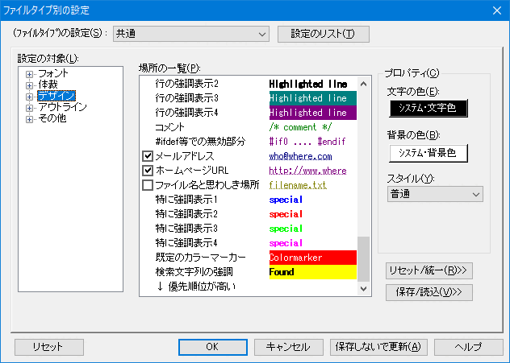

[HME0092A]
●コメント行やキーワードを色付けして表示するには

- 秀丸エディタで各種言語のソースファイルを扱っているのですが、コメント行やキーワードを色付けして表示したいのですが、どうやって設定すればよいですか？

-
「その他」-「ファイルタイプ別の設定」ダイアログの「デザイン」-「場所の一覧」を見て、該当する機能があるか確認しましょう。チェックボックスがある場合は、ONにすることで、その機能を利用できます。
表示される色やスタイルは、「場所の一覧」から利用する箇所を選択し、ダイアログ右側の「プロパティ」で色やスタイルを設定します。

任意の文字やキーワードに色をつけたい場合は、「強調表示」から設定を行います。複数にわたるコメントや強調表示は、「複数行コメント」から設定を行います。
第II部〜知っていると便利な秀丸の機能 強調表示も参照してください。